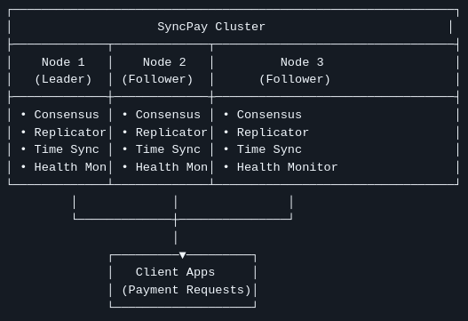

Distributed Systems Project
SyncPay
SyncPay is a distributed payment processing system built with Python and Flask to explore how reliable, fault-tolerant financial workflows can be designed across multiple nodes.
Project overview
I led a team of three on SyncPay and guided the technical direction, system architecture, and implementation of the core distributed components. The platform was designed to maintain transaction consistency, prevent duplicate processing, and remain resilient under node failures while still being observable and testable.
The project was meant to demonstrate how distributed backend systems can preserve correctness while still behaving like a practical payment service.

Architecture
SyncPay uses a leader-based cluster architecture built around Raft consensus for leader election and coordination. Only the elected leader accepts payment requests, which centralizes transaction handling and helps avoid conflicting writes.
Transaction state is replicated to follower nodes using a primary-backup replication model. Time synchronization, health monitoring, and failover logic were added to improve cluster resilience when nodes become unhealthy or unavailable.
My role
As project lead, I coordinated the team, defined the system architecture, broke down implementation tasks, and guided integration across consensus, replication, and monitoring components.
I also helped shape the testing strategy and made sure the system behaved correctly across normal operation, replication scenarios, and failure cases.
Key features
The system supports leader-based payment processing, cluster-wide transaction replication, deduplication to prevent duplicate payments, input validation for payment rules, health monitoring for node status, failover handling for resilience, and metrics for observability under load.
I also implemented transaction deduplication, request validation, and metrics collection to strengthen correctness, visibility, and operational control.
Challenges
The main challenges were ensuring consistency across nodes, preventing duplicate transaction processing, handling leader-only request routing, and maintaining system correctness during failures.
Designing the system so that it remained testable and observable was equally important, especially because the project was intended to demonstrate real distributed systems concepts in a practical backend application.
Testing and validation
A comprehensive test suite covers unit, integration, and end-to-end behavior using Pytest. The testing approach was built to verify not just happy-path payments, but also replication behavior and failure cases.
That made it easier to validate the system as a whole and confirm that the distributed workflows stayed correct under realistic conditions.
Outcome
The final result was a production-oriented distributed payment platform that demonstrates core backend and distributed systems principles, including consensus, replication, fault tolerance, and observability.
SyncPay shows my ability to lead a technical project, design a reliable multi-node architecture, and deliver a system with strong correctness and resilience properties.